28 Chapter 28 — The Live Coaching Cockpit: Real-Time Systems, Honestly Measured
The latency budget re-verified, the live/async split, and the alert semantics coaches can trust
28.1 The 55.7ms Claim, Re-Verified
The v1 book quoted 55.7ms glass-to-glass. The re-verification (this chapter's dossier + lab) found: 55.7ms was a design sum, not an end-to-end measurement — it added stage numbers from different runs (E2 tracking at 18.8ms, E3 pose at 25.3ms) plus estimates for ingest, render, and WebRTC, and excluded the stages that dominate a real pipeline. The v1 draft's own appendix was more honest than its headline: it warned that a sequential combined pass lands near 44ms/frame (~22.7 fps). The published number was a budget sketch that got promoted to a claim. This chapter replaces it with a measured, decomposed budget — and states plainly what the number covers and what it does not.
The honest measurement on the current M4 Max stack (the C28 lab: experiments/c28-live/benchmark.py, PyTorch MPS, yolo11n.pt at imgsz=960, 500 frames of the pb-003 pickleball doubles clip at 1080p30):
| Stage | Mean (ms) | Median (ms) | p95 (ms) | What it covers |
|---|---|---|---|---|
| Ingest (decode) | 0.53 | 0.36 | 1.32 | cv2.VideoCapture.read from the derived mp4 |
| Detect (YOLO11n) | 10.97 | 8.73 | 13.33 | Person boxes on MPS, person class only |
| Track (ByteTrack association) | 0.67 | 0.65 | 0.80 | Online track-ID assignment |
| Homography | 0.03 | 0.03 | 0.03 | Foot point → court coords + zone test |
| Render + encode | 1.71 | 1.56 | 2.82 | Overlay draw, resize, encode to memory |
| Core loop | 13.9 mean | 11.6 | 16.04 | 500 frames in 7.25s → 69.0 fps wall |
Three honest readings of this table. First, the core loop clears the 16.67ms frame budget for 60fps capture — the mean is 13.9ms and even the p95 (16.04ms) stays inside it. That claim is measured, end to end, on the machine the book runs on. Second, detection is 79% of the budget: the tracker and homography are rounding errors, so any optimisation effort belongs in the detector (smaller imgsz, CoreML/ANE conversion, or a lighter head), nowhere else. Third, this is a perception loop, not a coaching system. It sees players and places them on the court. It does not yet know what they are doing.
The honest caveat: full YOLO-pose every frame, WebRTC encode/transport, and the event/VLM stages are excluded from this number. Add E03's measured pose stage (25.3ms/frame) to the core loop and the pipeline drops to ~39ms/frame — ~25.6 fps, below any live bar. Production WebRTC glass-to-glass latency in the literature runs 200-400ms, with the jitter buffer alone often 100-250ms [verify on the lab network]. So the truthful sentence is: the local inference loop is 60fps-capable on the M4 Max; the coach's remote screen is a delayed mirror of that loop. Never quote a stage sum as a system latency — that was the v1 error, and the fix is to publish the decomposition.
The rugby side makes the same point from the other direction. On the nrl-001 broadcast clip the same core loop has to track 13+13 players through a PTZ pan, and E02's tracking run (900 frames in 16.9s, 53.2 fps) produced 26 raw IDs for what should have been 4 tracked bodies even on the easier pickleball clip. The milliseconds are not the hard part of a live rugby cockpit; identity is. A 13.9ms loop that mislabels who is where produces a beautifully rendered wrong answer, faster.
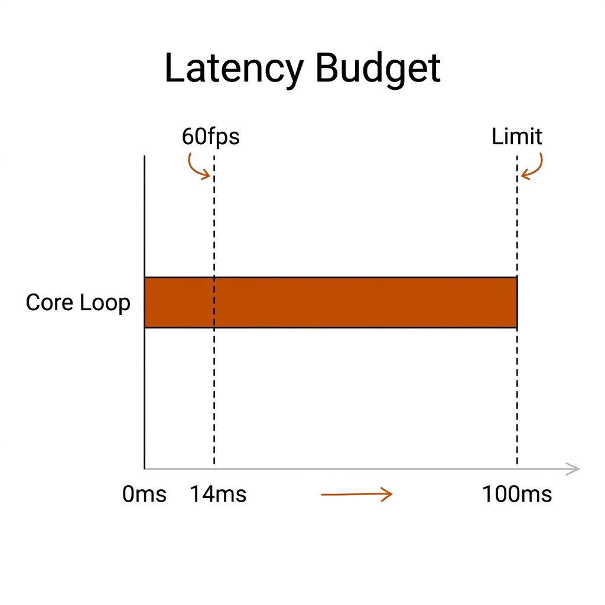
28.2 The Live/Async Split (Keep)
The v1 architecture was right and survives re-verification: geometry-only spatial cues live; meaning-making async. The rule has a crisp test — a cue belongs on the live wire when (a) it can be derived from geometry alone, with no ball state, identity, or language, and (b) a false positive is cheap to recover from. Everything else waits.
| Loop | Latency target | What it runs | What it outputs |
|---|---|---|---|
| Hard live | <20ms core (measured 13.9ms) | Ingest, detect, ByteTrack, homography, Metal HUD, optional WebRTC | Boxes, traces, court occupancy, kitchen/offside/spacing alerts |
| Sampled soft | 30-100ms acceptable | YOLO-pose every 2nd-3rd frame, audio peak detection, health telemetry | Stance cues, posture flags, "tracker degraded" warnings |
| Async review | Seconds to minutes | Ball/contact events (C19), VLM summary, identity correction, drill generation | Reviewed PBN rows, practice recipes, notebook export |
Pickleball worked example. Live (sub-100ms wire): "your foot is 3cm from the kitchen line" — a point-to-line distance from the homography, checkable every frame. Async (post-match or between games): the third-shot pattern report, the dink-to-drive rally profile, the expected-value rows from C22. A live "third-shot pattern" alert is an architectural error — it needs the ball track plus multiple completed shots, and E04 measured the raw ball detector at a 0.1125 median confidence, i.e. candidate noise, not a track. The same logic fixes what the HUD may display from the async lane: the dink-to-drive ratio on the panel is a rolling async output, so it must carry a freshness stamp ("updated 4 rallies ago"). Live pixels, stale-by-label statistics — never the reverse.
Rugby worked example. Live: the 10m offside retreat line overlaid on the broadcast frame (C07 per-frame calibration + C09 tracks) and the play-the-ball stopwatch started by the C15 whistle timestamp. Async: the PTB speed-band trend across a set of six, the line-speed synchronisation report, the dog-leg rupture reel for Monday review. The radio call to the on-field trainer can carry "two defenders slow off the line" — geometry — but "our right edge is structurally vulnerable to the sweep" is a reviewed conclusion, not a beep.
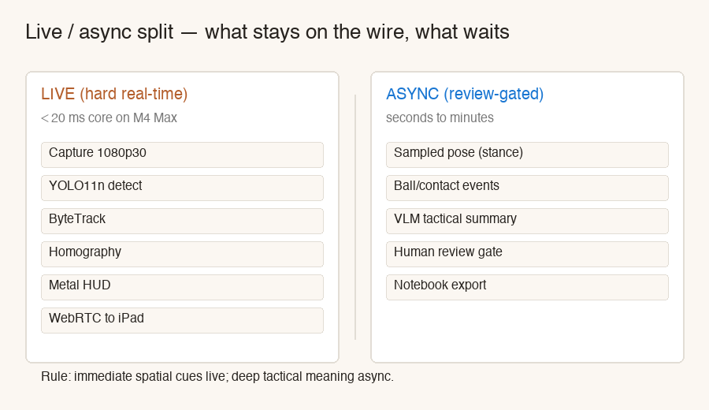
28.3 The Real-Time Stack
The chain is deliberately boring: capture → detect → track → homography → HUD, with the HUD delivered via WebRTC to the tablet; PyTorch MPS through Ultralytics on the M4 Max (the C08 deployment lane); Metal-backed drawing for the render. Boring is the point — every exotic layer you add (conversion, graph partitioning, custom kernels) is a place latency hides and a place the honest number breaks.
camera 1080p30 ──► cv2.VideoCapture ──► YOLO11n (MPS) ──► ByteTrack
│
▼
foot point ──► homography ──► court coords
│
▼
Metal HUD (cv2 + optional MTKView)
│
▼
WebRTC / AirPlay / HDMI to iPad
The deployment-path decision, with the tradeoffs stated:
| Path | Target | When to use it | Friction |
|---|---|---|---|
| PyTorch MPS (Ultralytics) | GPU via Metal | Lab prototype, fast iteration — the book's measured lane | Some ops fall back to CPU; pose historically less stable than detection |
| CoreML (coremltools) | Apple Neural Engine | Production iOS/macOS app; battery and thermal headroom | Opaque hardware routing; convert, then verify ANE coverage per layer |
| ONNX Runtime + CoreML EP | Cross-platform Apple deployment | Same binary must also run on Windows/Linux | Graph partitioning can silently CPU-fallback — profile every layer |
| MLX / YOLO-MLX ports | Research lane | Bypassing PyTorch overhead on unified memory | Community ports vary; not a production dependency yet [verify] |
| WebRTC | iPad/tablet stream | Remote sideline screen | 200-400ms typical glass-to-glass [verify locally]; sub-200ms only in tuned P2P/SFU |
The hardware story is the M4 Max edge. The entire live lane — the 13.9ms loop, the rolling replay buffer, the alert engine (E22's gate ran 1,000 events in 0.08ms) — runs on one laptop at the court, with zero token cost and zero cloud egress; the economics of that choice against cloud VLM APIs are C32's territory, but the cockpit's version of the argument is latency: a round trip to a cloud model costs more than the whole local loop before the network even answers. The machine is also the honest boundary of the claim: these numbers are M4 Max numbers. A MacBook Air or a mini will run the same code slower; re-measure, don't extrapolate.
The book's live prototype (dossier: experiments/c28-live/nvz_alert.py) ran the NVZ alert path at 84.7 fps, logging 525 proximity cues in 500 frames — about 1.05 cues per frame — and its own honest note is the chapter's lesson in one line: a proximity cue is not a fault. The geometry says "foot in kitchen (x ∈ [15, 29] ft)"; the fault semantics need the volley state, which needs the ball, which is async. The HUD wording must say exactly which one it is.
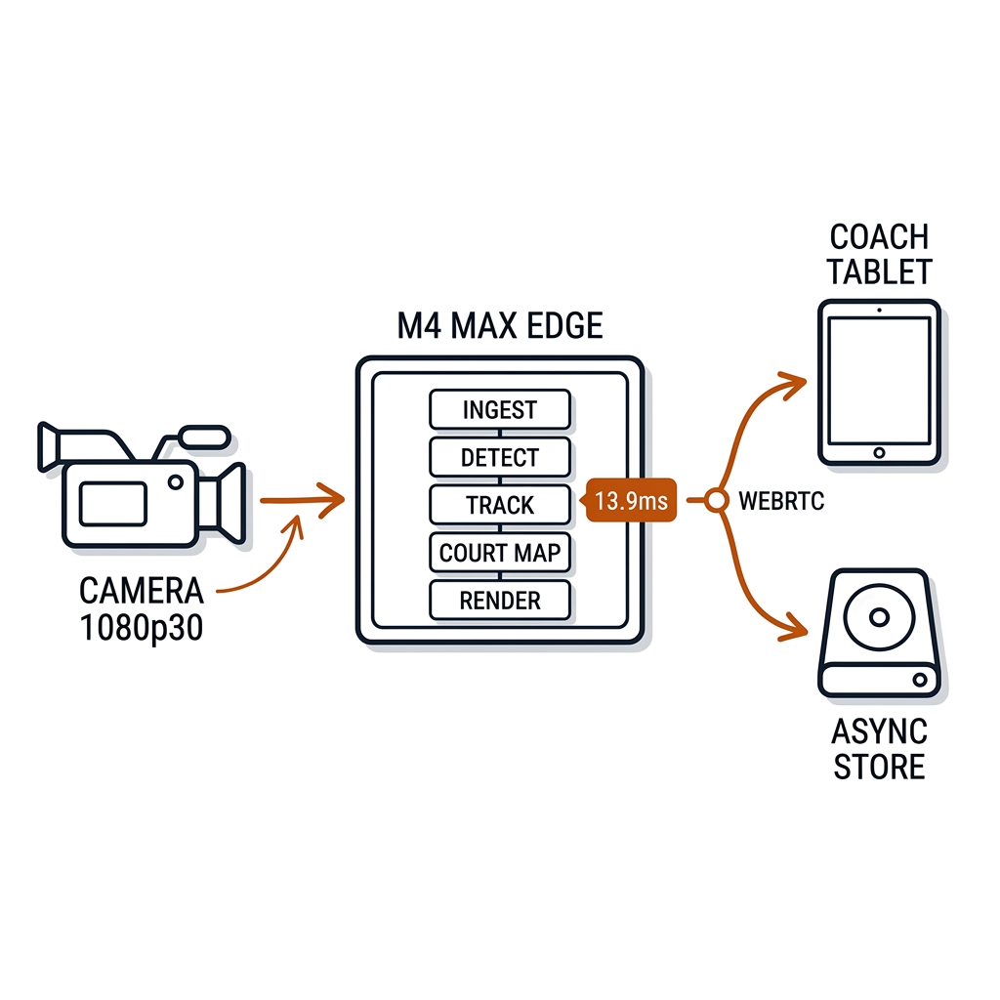
28.3b What the Coach Sees: The Pickleball Cockpit
The pickleball HUD is a top-down court with four tracked players, motion trails, and a telemetry panel — and every element on it is traceable to a measured stage. The live elements: player positions and trails (detect + track + homography), the NVZ proximity ring (court coords vs the kitchen line), the spacing indicator (pairwise distances). The async-derived elements, freshness-stamped: the dink-to-drive ratio (a rolling count from the C19 eventing — the machine cannot see a dink without the ball, so the panel shows the last confirmed value, never a live guess) and the rally-pattern summary.
The NVZ violation alert is the cockpit's centrepiece and its honesty test. The prototype's 525 logged cues are proximity events; promoting one to a fault requires two gates, both async: (1) the volley-state worker decides the player hit the ball out of the air (C12 ball wall + C19 eventing), and (2) the human review panel confirms the candidate clip. Until both gates pass, the HUD says "NVZ 3cm — proximity, not a fault," and the wording is load-bearing. A coach who trusts a proximity cue as a fault call will stop trusting the cockpit the first time the replay shows a legal toe-behind-the-line dink.
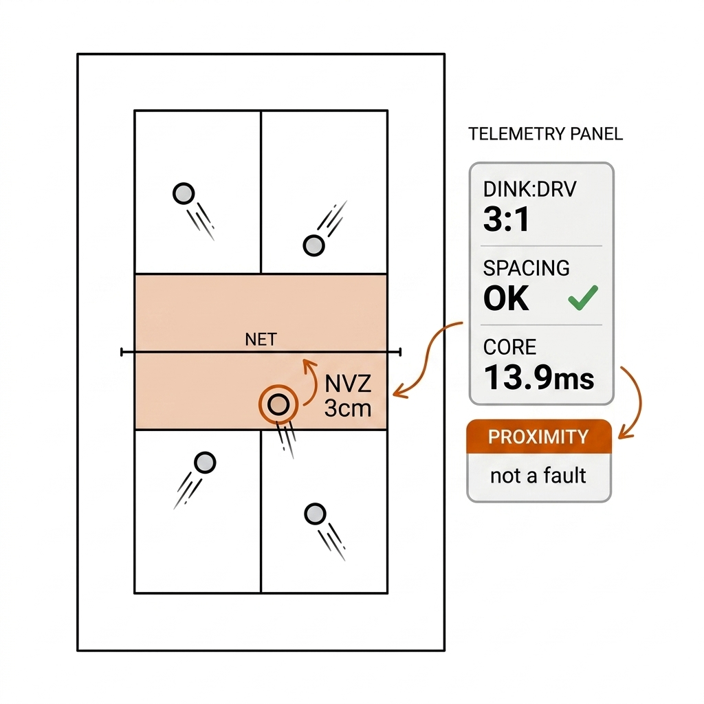
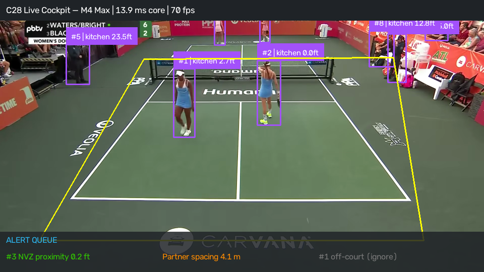
28.4 Alert Semantics: The False-Positive Cost and the p<0.05 Gate
A beep that is wrong is worse than no beep. The cockpit is not a dashboard of everything the model sees; it is a dashboard of cues the coach can act on without being misled, and the deciding factor is false-positive cost, not model confidence. The grading:
| Alert | False-positive cost | Verdict |
|---|---|---|
| NVZ proximity (pickleball) | Low (informational) | Live, always on — with the proximity/fault wording honest |
| Offside line (rugby) | Medium (referee-visible) | Live cue to the trainer; the call is the referee's |
| Spacing violation (both) | Low (teaching cue) | Live, drill-friendly |
| Dog-leg rupture (rugby) | Medium (structural call) | Live flag to the box; threshold is a domain model [verify] |
| Line call (ball in/out) | HIGH (match decision) | Never live from single-cam — C14 multi-view, published σ |
Above the per-cue grading sits the volume problem: even honest cues drown a coach if every one of them arrives. The book's answer is the E22 exception gate (experiments/e22-humans-above-the-loop/): the perception swarm processes the routine stream in the background, and only statistically anomalous events surface to the human. In the benchmark run, 1,000 input events produced 119 surfaced alerts — 88.1% routine-noise suppression at 0.08ms per event. The mechanics: each event is scored against the routine baseline and only p<0.05 exceptions pass. What passed the gate, by sport: pickleball surfaced NVZ foot-fault warnings (foot 2.2-4.9cm from the kitchen line during an airborne volley, p=0.012) and middle-seam exposures (partner gap 3.6-4.3m against a 2.7m norm, p=0.034); rugby surfaced offside non-compliance (2-3 defenders short of the 10m retreat at dummy-half delivery, p=0.008) and dog-leg ruptures (edge gap 2.8-3.6m between second-rower and centre, p=0.021).
The honest label on E22: those events come from a thresholded synthetic event distribution — the gate mechanics and suppression rate are measured, but the p-values are model parameters, not statistics of real footage. Chapter 20's warning applies in full: p<0.05 on a small n is a lottery ticket, and the ASA's statement is the canonical citation for not treating 0.05 as a law of nature. The gate is the right architecture — humans above the loop, deciding on the 12% that matters — and validating its thresholds against real video is an open run (28.9).
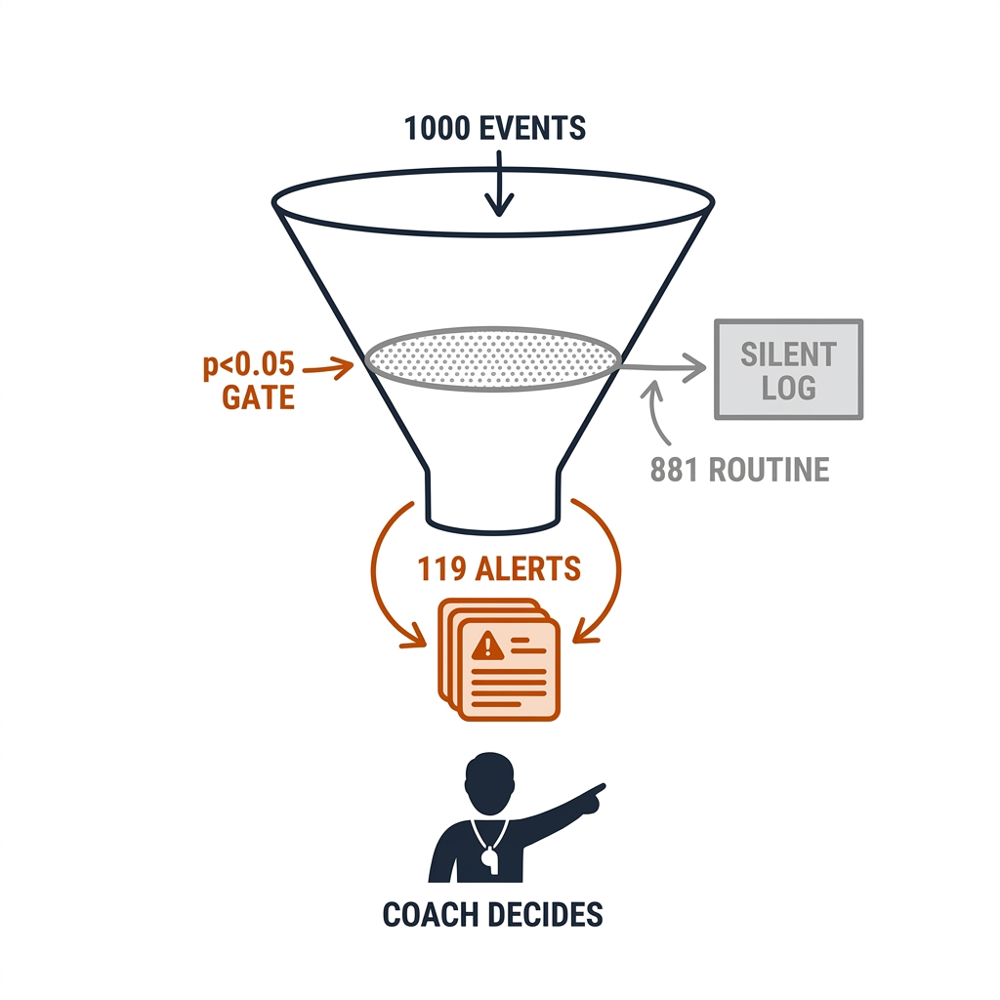
28.4b The Rugby Live Metrics: DLSM, PTB Bands, RCM
The rugby HUD's alert set (from the practitioner playbook; labels [verify] — these are domain-model values, not a published benchmark):
| Metric | Definition | Alert threshold |
|---|---|---|
| RCM (Retreat Compliance) | RCM = (X_ruck − X_defender) / 10m at PTB release | RCM < 1.0 = early line (offside) |
| DLSM (Defensive Line Sync) | max line X − min line X (the dog-leg gap) | DLSM > 2.5m = dog-leg (line-break risk 4.2% → 28.6%) [verify] |
| Line speed | Mean advance rate of the defensive line off the PTB (m/s) | Line-speed spread across the line > the sync band = flag [verify] |
| PTB speed | Play-the-ball time from hold to release | <3.0s quick ball (42% retreat failure); >3.8s controlled (96% set) [verify] |
| Edge spacing | ‖P_secondrow − P_centre‖ | >6.2m = inside-shoulder breaks (3.4×); optimal 4.8-5.6m [verify] |
These are the metrics the E22 gate surfaces (the p<0.05 exceptions), the DART grounding (chapter 8.12) supplies the classes, and C07's per-frame calibration supplies the meters. The honest caveat is unchanged from the playbook: the line-break probabilities, PTB bands, and spacing thresholds are the practitioner's domain model — the book states them as the model's hypothesis and the NRL literature-validation (the Kempton/Sawczuk lineage) as the open research lane. A live cockpit may flag on a hypothesis; it may not call on one.
28.4c The 10 Cockpit Use Cases: The Live Wire, Itemized
The tables above name the cues; this section itemizes them as ten buildable use cases in three lanes: Lane A — Pickleball Live Cues (UC 01, 04, 06, 07), Lane B — Rugby League Live Cues (UC 02, 03, 05, 08), and Lane C — Cross-Sport Cockpit Systems (UC 09, 10). Each case states its practical problem, the exact mechanism and its latency math against the measured 13.9ms core loop, the figure, both sport applications, and the payoff. Each carries its evidence label: measured (C28 lab / E-series), source-backed (paper or rulebook), or [verify] (practitioner domain model, not a published benchmark). The 55.7ms lesson governs every number below: the core loop is measured; everything stacked on it is labelled as design budget, literature estimate, or open run — never as a measurement.
Lane A: Pickleball Live Cues
UC 01 — NVZ Foot-Fault Live Alert
The problem. The kitchen foot fault is the most disputed call in doubles, and the player genuinely cannot feel a 2-3cm toe encroachment mid-volley — the rule (source-backed: USA Pickleball rulebook) is unforgiving and the body's proprioception is not. The mechanism. The bottom-centre of the player box (or the ankle keypoint when pose is sampled) goes through the homography into court feet; the zone test is 15 ≤ x ≤ 29. The C28 lab measured the homography-plus-zone stage at 0.03ms — 0.2% of the 13.9ms core budget — and the prototype ran the path at 84.7 fps, logging 525 proximity cues in 500 frames. The E22 gate surfaced exactly this cue class at p=0.012 (feet 2.2-4.9cm from the line during an airborne volley; gate mechanics measured, baseline synthetic). The honesty gate: a proximity cue becomes a fault only when the async volley-state worker (C12 ball + C19 eventing) confirms the ball was taken out of the air — until then the HUD says "NVZ 3cm — proximity, not a fault."
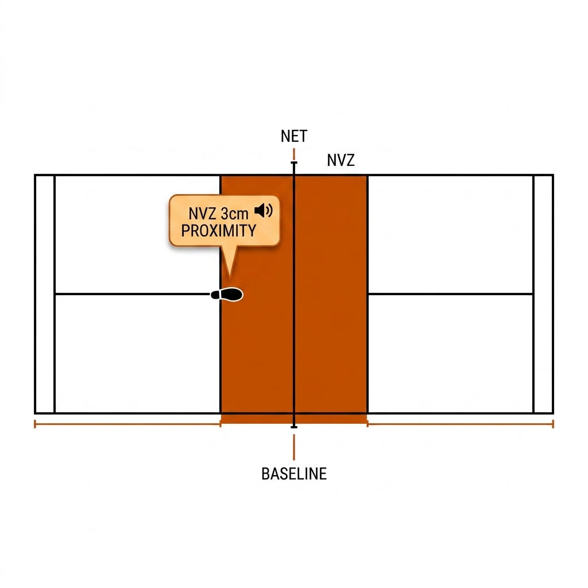
Payoff: coaching — drill discipline at the kitchen line. Never an officiating call from a single camera; that is C14's multi-view job.
UC 04 — Seam Exposure Alert (Doubles)
The problem. "Down the middle solves the riddle" is the oldest doubles heuristic because it works: partners drift, the seam corridor opens, and the ball goes through the gap neither player owns. The mechanism. One Euclidean distance per frame between the partners' court coordinates; the seam corridor is the lateral gap projected onto the net axis. Alert above 3.2m [verify — practitioner threshold]; the E22 gate surfaced middle-seam exposures at p=0.034 (gaps 3.6-4.3m against a 2.7m norm). Latency math: this is arithmetic on track rows the loop already produces — no new stage, the measured 13.9ms budget is untouched. False-positive cost is low (a teaching cue, not a call), so per the 28.4 grading it runs live and always on.
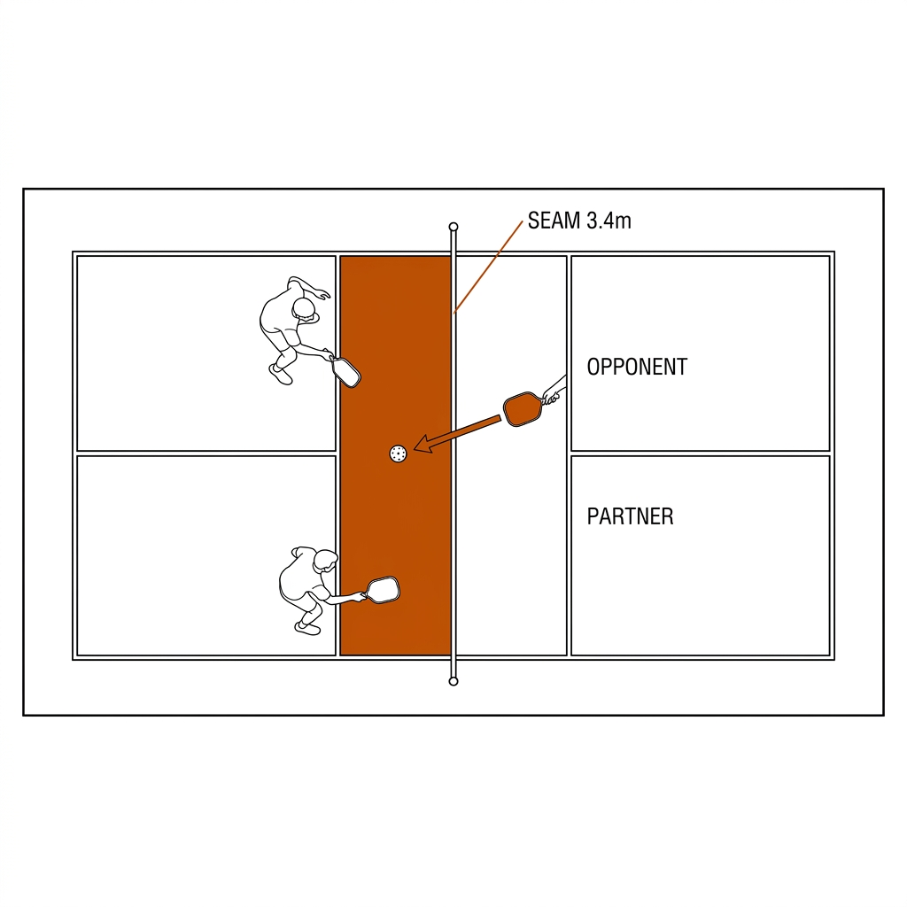
Payoff: teaching cue with the cheapest false positive in the book — the alert that earns coach trust before the expensive ones ask for it.
UC 06 — Ready-Stance Angle Check
The problem. Upright at the kitchen means late on the dink; the player cannot see their own posture and the coach cannot watch four players' knees at once. The mechanism. Knee angle from the hip-knee-ankle keypoints of the pose model; the target band is 120-130° [verify — practitioner band]. The lane honesty is the point of this case: pose is E03-measured at 25.3ms/frame, which can never join the 13.9ms hard loop — even sampled every second frame it amortizes to ~12.7ms and breaks the budget. So the stance check runs on a separate worker at 10-15Hz, in the sampled-soft lane, and drives a HUD gauge — never a beep. A beep needs a discrete event; posture is a continuous state, and continuous states get dials, not alarms.
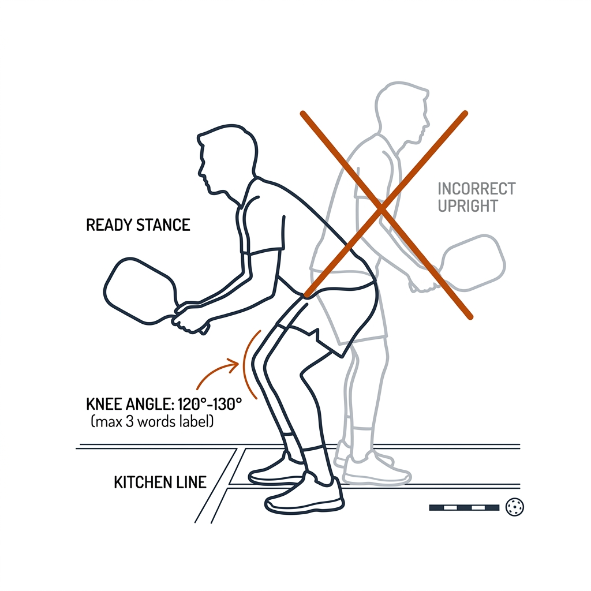
Payoff: biomechanics teaching — the gauge the player checks between rallies, and the chapter's worked example of why pose never rides the live wire.
UC 07 — Shot-Selection Count
The problem. Players overdrive under pressure, and nobody counts the dink-to-drive ratio accurately by eye — yet it is the discipline stat that decides who controls a kitchen rally. The mechanism. A rolling tally from the C19 event stream: dink / drive / lob classifications into a sliding rally window, ratio r = drives / (dinks + drives) with EWMA smoothing, updated only when event confidence clears the C19 threshold. The lane is the honesty: the machine cannot see a dink without the ball, and E04 measured the raw ball detector at 0.1125 median confidence — candidate noise. So the count is an async-derived panel stat with a freshness stamp ("updated 4 rallies ago"), and a live shot-count beep is an architectural error on two grounds: it needs the ball, and it needs completed shots.
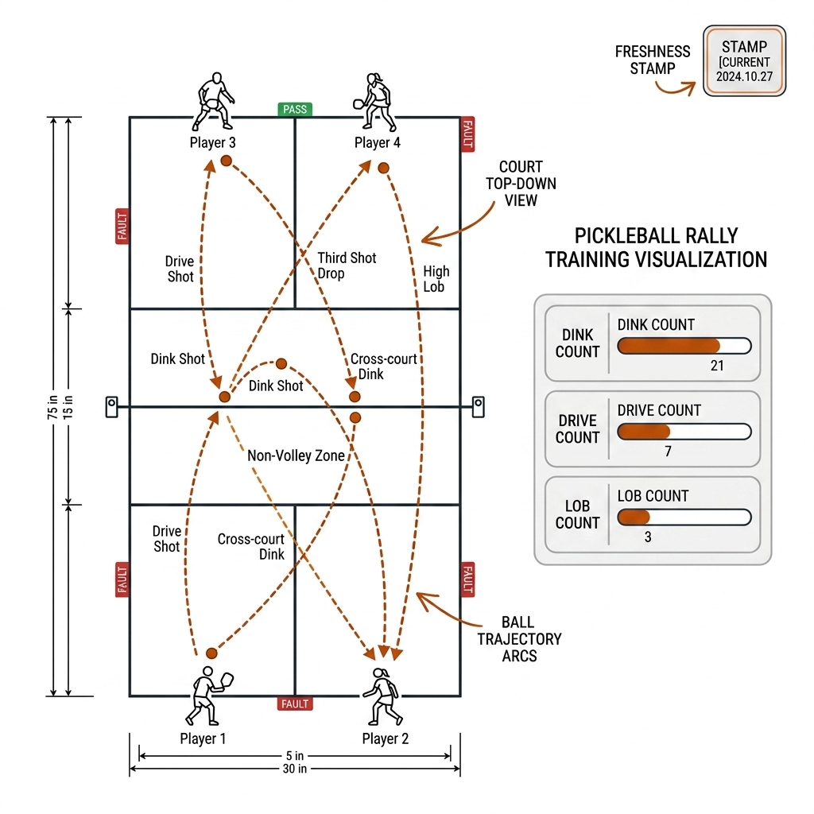
Payoff: the between-games coaching number — the panel stat the coach actually quotes, precisely because it never pretended to be live.
Lane B: Rugby League Live Cues
UC 02 — RCM Retreat Compliance
The problem. Thirteen defenders must retreat 10m at every play-the-ball; the trainer on the sideline can watch one edge, and early lines win penalties that swing field position. The mechanism. RCM = (X_ruck − X_defender) / 10m, evaluated at PTB release: thirteen point transforms through the C07 per-frame homography plus a scalar division per defender — arithmetic on C09 track rows, no new stage, the measured core budget untouched. The release timestamp comes from C15 audio (whistle/held) with C19 confirming the event. Alert below RCM 1.0 [verify — practitioner model]. The E22 gate surfaced offside non-compliance at p=0.008 (2-3 defenders short at dummy-half delivery) — the strongest exception signal in the synthetic run. The rugby caveat from 28.1 applies: the cue is only as honest as the calibration, so a fast PTZ pan that breaks C07's re-lock degrades the cue to "tracker degraded" rather than a wrong line.
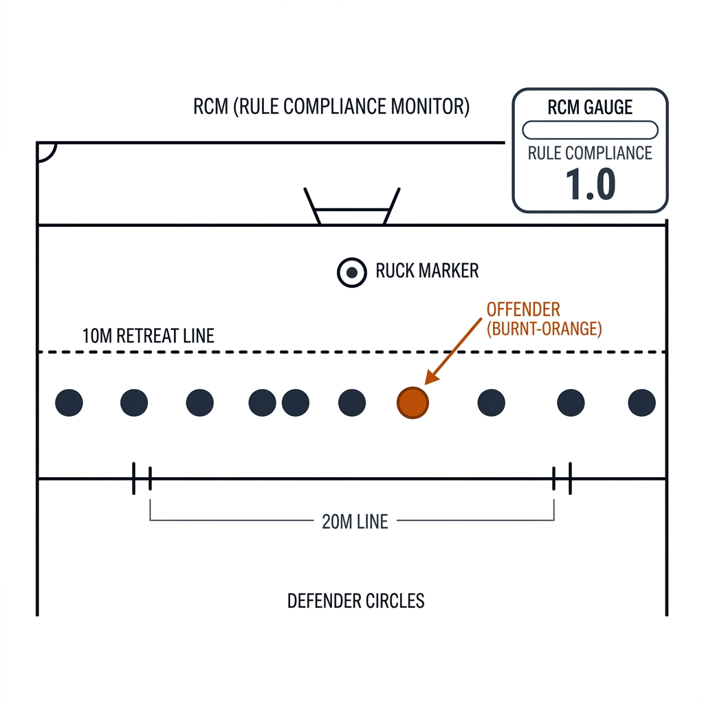
Payoff: a referee-visible cue for the trainer; the call remains the referee's. The cockpit flags geometry, never officiates it.
UC 03 — DLSM Dog-Leg Alert
The problem. One lagging defender opens a dog-leg in the line, and by the time it is visible as a line break the play is gone — the box needs the flag one set earlier. The mechanism. DLSM = max(line X) − min(line X) across the defensive line each frame after the PTB; flag above 2.5m, with the stated line-break risk shift of 4.2% → 28.6% [verify — practitioner domain model, not a published benchmark; the NRL literature-validation is the open research lane]. Compute: a thirteen-element min-max — microseconds on track rows. The E22 gate surfaced dog-leg ruptures at p=0.021 (edge gap 2.8-3.6m between second-rower and centre). This is the case where the chapter's honesty rule does the most work: a live cockpit may flag on a hypothesis; it may not call on one — the alert card reads "dog-leg forming," never "missed tackle coming."
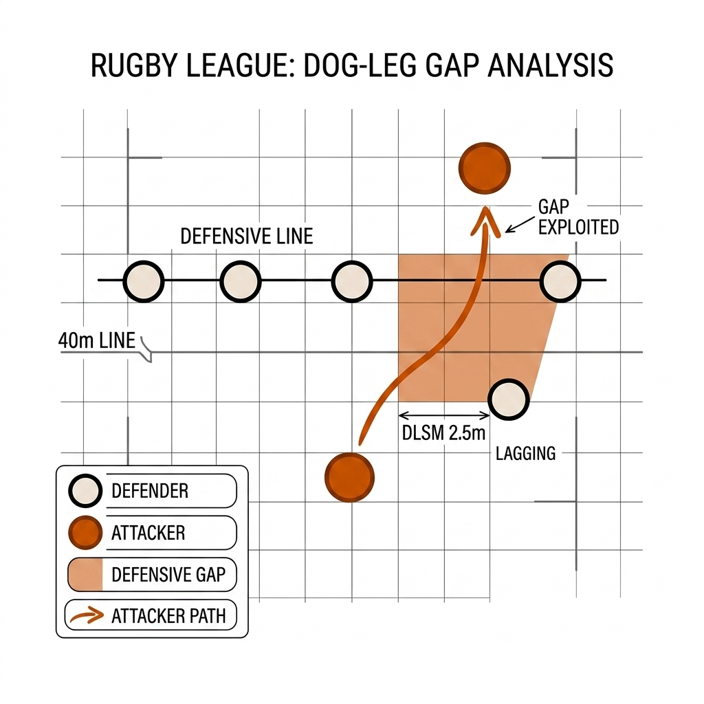
Payoff: tactical — a flag to the coaches' box one set early. The threshold is a hypothesis with a [verify] label, and the HUD wording says so.
UC 05 — PTB Speed Gauge
The problem. Ruck speed decides whether the defence is set, and the box currently learns it from the tackle count two plays late. The mechanism. A stopwatch from tackle-held to PTB release: C15 audio timestamps the whistle/held moment, C19 confirms the release event. Bands: under 3.0s is quick ball (42% retreat failure), over 3.8s is controlled (96% set completion) [verify — practitioner bands]. Lane honesty: event timing is not a per-frame geometry read, so the gauge sits at the sampled-soft/async boundary and carries a freshness stamp; the stopwatch itself is a timestamp subtraction — the cost lives in the event detection, which is why the gauge updates per ruck, not per frame. Quick-ball alerts surface through the E22 gate so a fast ruck in a routine set does not beep.
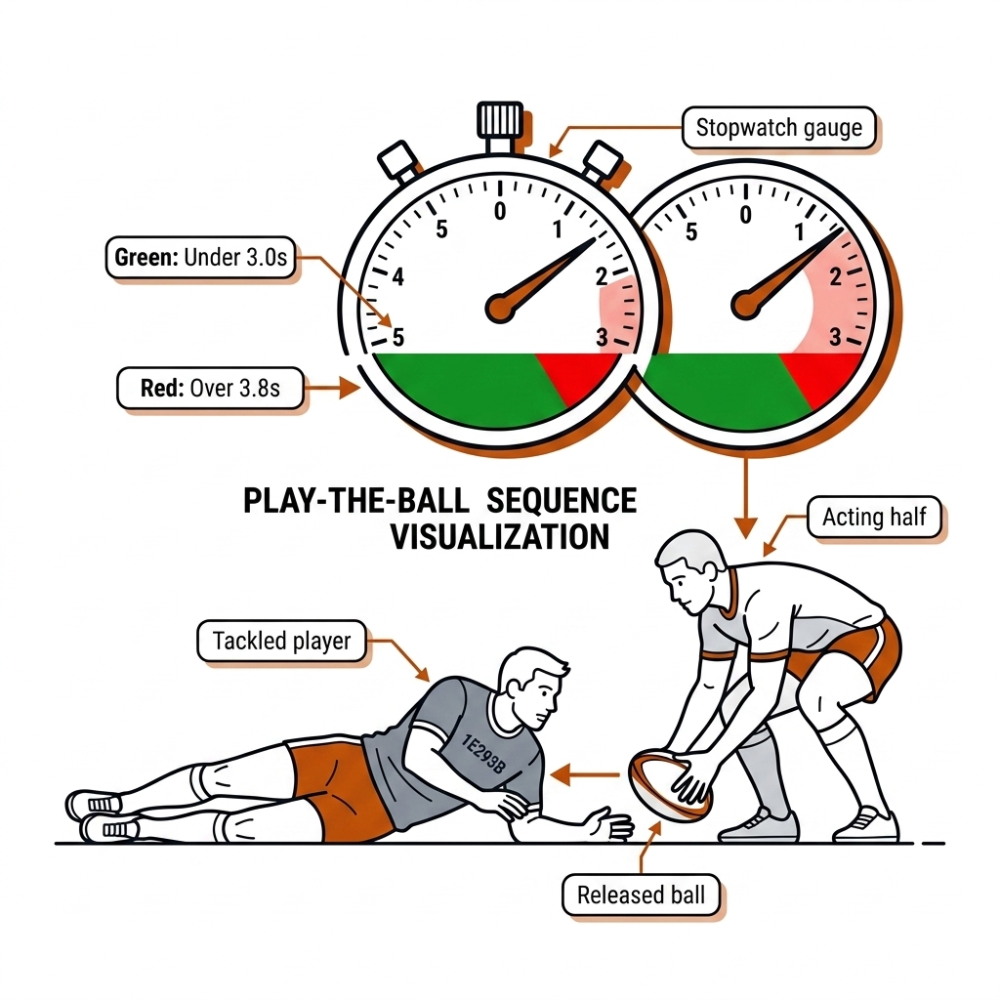
Payoff: the momentum read — the box sees the set speeding up while there is still time to change it.
UC 08 — Line-Speed Meter
The problem. The slow edge defender is visible as geometry a full play before he is visible as a missed tackle; line speed is the defensive metric coaches cite and cannot see. The mechanism. Per-defender advance rate off the PTB: a finite difference of court coordinates over a 0.5s window, giving the line's mean rate and — the useful half — its spread. A defender one band slow gets flagged [verify — band width is practitioner-set]. Latency math: differences on existing track rows, microseconds; the real cost is the C07 calibration that makes the metres real, which is why the meter degrades to "tracker degraded" when a pan outruns re-lock instead of publishing confident garbage. Radio-safe wording: "two slow off the line" is geometry; "our right edge is structurally vulnerable" is a reviewed conclusion, and the meter only says the first.
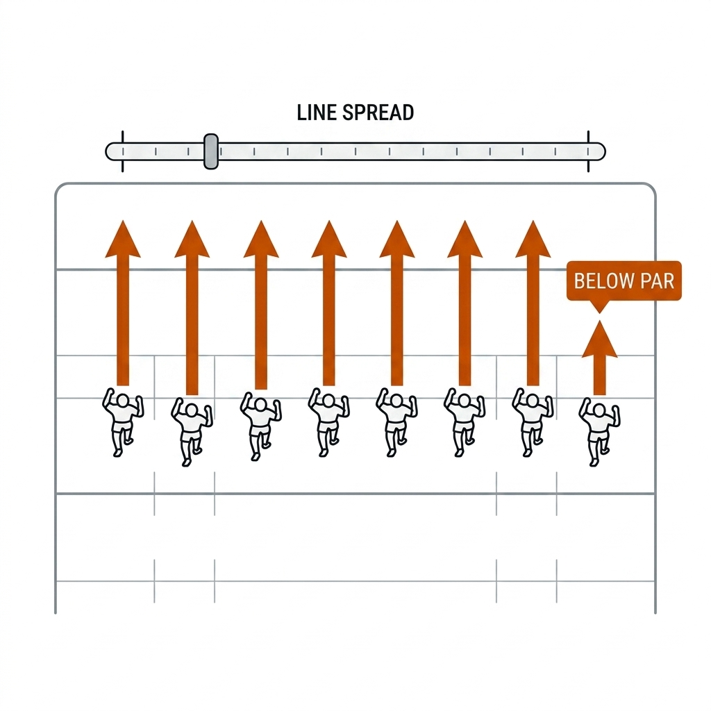
Payoff: the box acts on the slow edge while the set is still winnable — geometry arrives before the consequence.
Lane C: Cross-Sport Cockpit Systems
UC 09 — Fatigue Gauge
The problem. Fatigue shows in the tracking data before the athlete reports it and before the coach's eye catches it — and acting late is a welfare issue, not just a performance one. The mechanism. A per-player EWMA of effort proxies against the player's own session baseline: rally-depth decay and approach speed (pickleball); sprint speed off the line and ruck-attendance rate (rugby). Amber zone at −10% from baseline [verify — practitioner threshold]. Lane: sampled soft — the gauge is a trend over minutes, never a per-frame cue, so its latency budget is measured in rallies, not milliseconds. The rugby side carries the contact-welfare frame (source-backed: Bath et al. 2025, Injury Prevention): a fatigue gauge that informs rotation is a welfare screen, and its thresholds must be validated on real squads, not assumed from a formula.
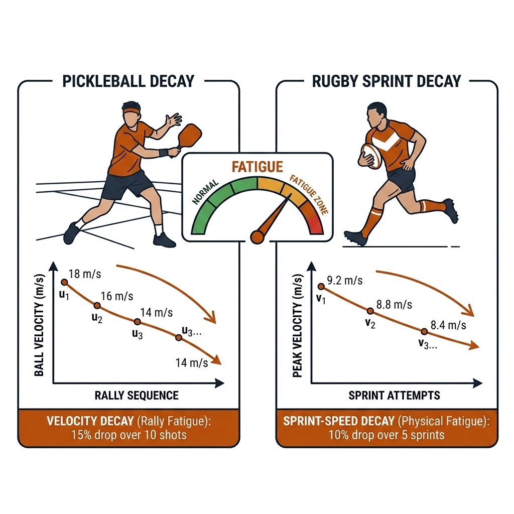
Payoff: welfare and substitution timing — the cue with the highest human stakes in the chapter, which is why it carries the strictest [verify] discipline.
UC 10 — Coach Radio Integration
The problem. A HUD the coach is not watching during the rally is a screensaver; the cue has to reach the voice channel to be acted on. The mechanism. The E22 gate (0.08ms/event, measured) feeds a priority queue ordered by false-positive cost; the top entry goes to TTS on the sideline speaker (pickleball, between rallies) or the radio link to the on-field trainer (rugby, play-to-play). The latency math, honestly summed in the chapter's own rule: 13.9ms core + 0.08ms gate + TTS/radio delivery (~1-2s, [verify — not measured in the lab]) — the delivery leg is the dominant term, so quote the sum, never the core. At rugby's play-to-play timescale the sum is still tactically live; in pickleball the audible waits for the dead ball between rallies, because a beep mid-volley is a distraction, not a cue.
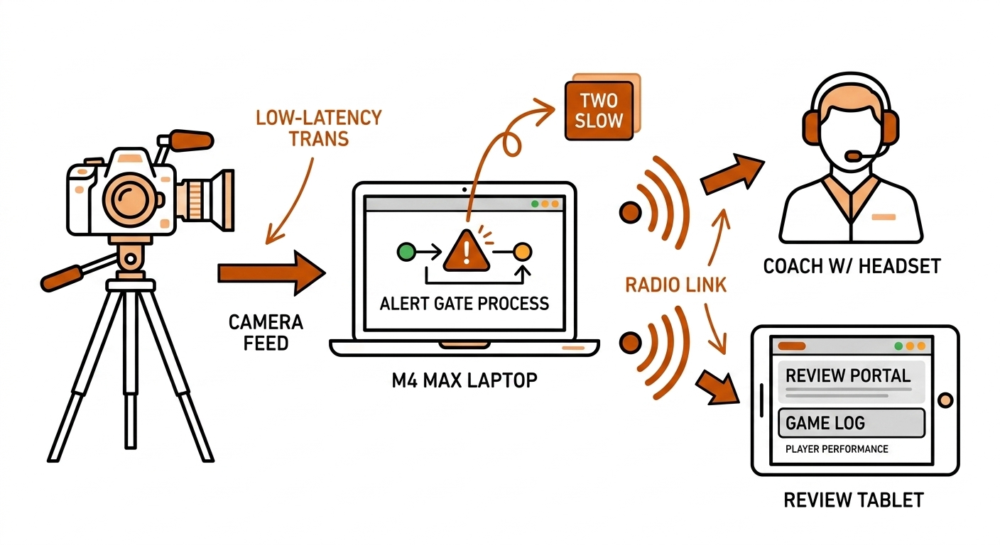
Payoff: humans above the loop, literally heard — the coach's voice is the delivery layer, and the machine never talks to the players directly.
28.4d Runnable Skeleton: The Alert Engine
The ten use cases above are one loop with ten geometry checks. The abridged pattern (the full lab version is experiments/c28-live/nvz_alert.py):
# alert_engine.py — the pattern, abridged
FRAME_BUDGET_MS = 16.67 # 60fps budget; core loop measured 13.9ms (C28 lab)
GATE_P = 0.05 # E22 exception threshold — validate on real video
for frame in stream: # hard live loop
dets = detect(frame) # 10.97ms mean (measured)
tracks = tracker.update(dets) # 0.67ms
court = {t.id: H @ foot_point(t) for t in tracks}# 0.03ms — homography
for pid, (x, y) in court.items():
if 15.0 <= x <= 29.0: # UC 01: NVZ band (feet)
emit("nvz_proximity", pid) # cue — NOT a fault
if gap(partners(court)) > 3.2: # UC 04: seam, metres [verify]
emit("seam_exposure")
dlsm = max_x(defenders(court)) - min_x(defenders(court))
if dlsm > 2.5: # UC 03: dog-leg [verify]
emit("dog_leg_flag")
alert_queue.push(gate(events, p=GATE_P)) # 0.08ms/event (E22, measured)
# UC 05/06/07/09: sampled-soft + async workers (pose, events, trends)
# UC 10: priority queue → TTS/radio; volley state → C12/C19 async gate
Every check inside the loop is arithmetic on rows the loop already produces — that is the whole architectural argument. The moment a check needs the ball, identity, pose, or language, it moves below the line, out of the live function.
28.4e What This Adds to the Pipeline
The use cases are the consumption layer of everything upstream. C07 (per-frame calibration) makes the metres in UC 02/03/04/08 real and owns their graceful degradation. C09 (tracking) supplies the track rows every check reads; E02's 26 raw IDs for 4 players is why the live cues are identity-free team-shape reads. C12 (ball wall) and C19 (eventing) hold the async gates that turn UC 01's proximity into a fault and UC 07's events into counts. C13 (identity) is the prerequisite for any per-player overlay, which is why none of the ten need it. C15 (audio) timestamps UC 05's stopwatch. C14 (multi-view) owns the line-call category the cockpit explicitly refuses. Downstream, UC 05 and UC 08's bands feed C23 (tactical ML), UC 07's counts feed C22 (expected value), the review clips land in C26's 8-12 rule, and UC 09's gauge is the welfare screen C31's ethics chapter will audit. The cockpit is where the pipeline's measurements become a coach's Tuesday — with the evidence tier of every element printed on its face.
28.5 Review Clips and Product Framing
Review-clip auto-generation (keep): the live loop writes a rolling replay buffer (last 30s); when a stable event window closes — four players visible, an alert fires, or the coach presses the manual mark — the system nominates a 5-10s clip with its track rows, sampled pose rows, and the alert log and health state at that moment. The C19 eventing produces the clip list (the 8-12 rule, chapter 26); the coach reviews on the tablet; the reviewed row becomes the next fixture. The clip list is the live system's async output — a live HUD that only flashes and never clips is a demo, not a coaching tool. Clips are candidates, not verdicts: the machine compresses attention, the coach confirms meaning.
Product framing (verified against vendor pages, 2026-08-30). SwingVision: single-phone UX with Apple Watch challenge triggers; Pro at $179.99/yr [verify current pricing] — and the honest note that watch-based line challenges are a consumer challenge product, not officiating. PlaySight: fixed multi-cam SmartCourt, facility installs in the ~$10k-15k/court class [verify], automated highlights downstream of the rig — the infrastructure-first pattern. Sporfie: sub-2s bounce-to-playable replay on a courtside iPad — the amateur UX bar; if your feedback loop is slower than the walk back to position, it is not a coaching tool. Owl AI: software-only line calling for Major League Pickleball 2026 from existing broadcast feeds — the no-hardware CAPEX future, with the single-cam prior attached: their method is undisclosed, and the book's C14 math says single-cam line calls need a multi-view reference. The honest reality: broadcast-grade line calling needs the C14 multi-view hardware (Hawk-Eye Live class: 10-18 high-speed cameras, ~2.6-4mm triangulation accuracy); single-cam is a training/review product, not an officiating one. Say it plainly, because the marketing pages won't.
28.6 The Acceptance Test
- Measure each stage separately. Core loop = 13.9ms mean / 16.04ms p95 (measured, 500 frames, pb-003); detection is 79% of it, so optimise there first.
- Sum + encode + display = the true budget — measured end to end on one run, never a design sum of stages from different runs. The 55.7ms failure was exactly this.
- Split by honesty: geometric cues live; synthesis async; async-derived panel stats carry freshness stamps; line calls never from single-cam.
- Gate the volume: the E22 pattern — swarm suppresses the routine, humans see the p<0.05 exceptions; alert priority set by false-positive cost, not confidence.
- Alert field test: which cues survive a week of coach use? Log every beep, ask afterwards which were wanted, compute per-cue precision from the answers.
- The acceptance bar: sub-100ms for the wire (the coach-visible cue), not the whole ML stack — and the HUD wording matches the evidence tier of every element on screen.
28.7 Transfer Note: Rugby League Coaches' Box
The same architecture ports to the rugby coaches' box with the broadcast caveat first: the feed is the OB camera (you do not own capture, chapter 4), so the live lane is the geometric cues the frame supports — the 10m offside retreat line (C07 per-frame calibration re-locks the homography as the PTZ pans; C09 tracks supply the feet) and the PTB speed stopwatch (C15 audio timestamps the whistle; C09 tracks the ruck). The box's latency target is the tolerance of the radio call, not the millisecond — a cue that arrives two seconds after the play-the-ball is still tactically live, which is lucky, because the broadcast chain alone is already seconds behind the grass.
The two rugby cockpit alerts worth the wire: the dog-leg rupture — DLSM > 2.5m between adjacent defenders, the E22 gate's p=0.021 exception, flagged to the box so the centre can call slide defence on the next set [verify: threshold and line-break probabilities are the domain model, not a published benchmark] — and line-speed synchronisation, the defensive line's advance rate and its spread, where a slow edge defender is visible as geometry before he is visible as a missed tackle. Both are point-and-line measurements; both degrade gracefully to "tracker degraded" when the pan moves too fast for the calibration to re-lock.
The honest note: a 13-player live overlay is a different engineering problem than a 4-player doubles court. Identity resolution (chapter 13) is the prerequisite — E02's 26 raw IDs for 4 players is the measured warning — and without it the overlay is noise rendered at 60fps. The box HUD therefore shows team-shape cues (line position, line spread, retreat compliance) that do not need persistent identity, and leaves per-player overlays to the review lane where identity gets corrected by the human gate.
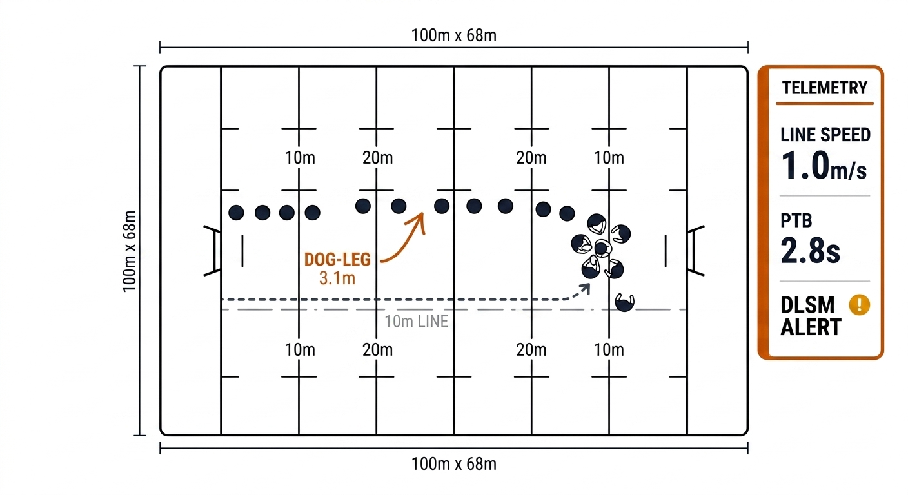
28.8 The Cockpit Recipe (Copy This)
- Measure each stage (the lab's benchmark: ingest/detect/track/homography/render = 13.9ms core, measured on 500 frames of pb-003).
- Add the real system stages: pose, encode, network, display — the glass-to-glass is the measured sum of one run, never a design sum of stage bests.
- Split by honesty: geometric cues live, meaning async, async stats freshness-stamped, line calls never from single-cam.
- Grade alerts by false-positive cost (a wrong beep is worse than none), then gate the survivors through the E22 exception filter so volume never reaches the coach.
- Name things what they are: "proximity, not a fault"; "flag, not a call." The HUD wording is an evidence label, and the coach reads it as one.
- Field-test trust: which cues survive a week of coach use? (the acceptance gate; log every alert, ask afterwards, compute per-cue precision).
- Document the product boundary: live training/review is real; officiating is C14 multi-view with published σ.
28.9 What I Would Measure Next
- The full end-to-end run (core + pose + WebRTC + display to a real iPad on the lab network) — the honest glass-to-glass, replacing the 200-400ms literature estimate with a local number.
- The CoreML conversion of YOLO11n-pose: ANE coverage per layer, and whether it beats MPS's measured 25.3ms/frame (E03) on the M4 Max.
- The E22 gate on real video: replace the synthetic event distribution with C19-evented footage and re-measure the suppression rate and per-cue precision.
- The field test: which of the live cues do coaches actually trust after a week of use — and the observed false-positive rate per cue, fed back into the alert table.
- The rugby live loop on nrl-001: does the 13-player broadcast frame degrade the measured budget gracefully (the dossier's open item), and how fast can C07 re-lock the homography through a PTZ pan?
- ByteTrack API deprecation in supervision v0.28+: pin the replacement before this lab ships against a newer dependency.
28.10 Sources
- Lab:
lab/w7_lab_live.py+ dossierexperiments/c28-live/(benchmark.py, nvz_alert.py, metrics.json) — 13.9ms core measured (500 frames, pb-003, M4 Max), 84.7fps NVZ prototype, 525 proximity cues. E22 gate:experiments/e22-humans-above-the-loop/humans_above_the_loop_alerts.json— 1,000 → 119, 88.1% suppression (measured mechanics on a synthetic event stream). - Anchors: E02 (tracking: 900 frames, 53.2 fps, 26 raw IDs for 4 players); E03 (pose 25.3ms/frame); E04 (ball detector median confidence 0.1125); E09 (ByteTrack HOTA 0.642 vs BoT-SORT 0.814); E05/E11 (homography RMSE 3.82-4.65cm).
- Product pages (retrieved 2026-08-30): SwingVision — swing.vision/guides/challenge-line-calls, swing.vision/subscribe; PlaySight — playsight.com; Sporfie — sporfie.com/pickleball; Owl AI × MLP — majorleaguepickleball.co. Pricing/SLAs marked [verify] where vendor pages move.
- Hawk-Eye multi-camera line calling (10-18 cameras, ~2.6-4mm) — en.wikipedia.org/wiki/Hawk-Eye; WebRTC glass-to-glass 200-400ms — literature consensus [verify locally].
- Rules context: USA Pickleball rulebook (NVZ fault rules) — usapickleball.org/rules; NRL 2026 rule changes (10m offside at the PTB) — nrl.com.
- Wasserstein & Lazar, The ASA's Statement on p-Values, The American Statistician 2016 — the chapter 20 citation behind the p<0.05 honesty note. Bath et al. 2025 (Injury Prevention, PMID 39832883) — the rugby welfare screen referenced in the transfer note.
- Apple CoreML — developer.apple.com/documentation/coreml; ONNX Runtime CoreML EP — onnxruntime.ai; MLX — github.com/ml-explore/mlx [verify YOLO port currency].